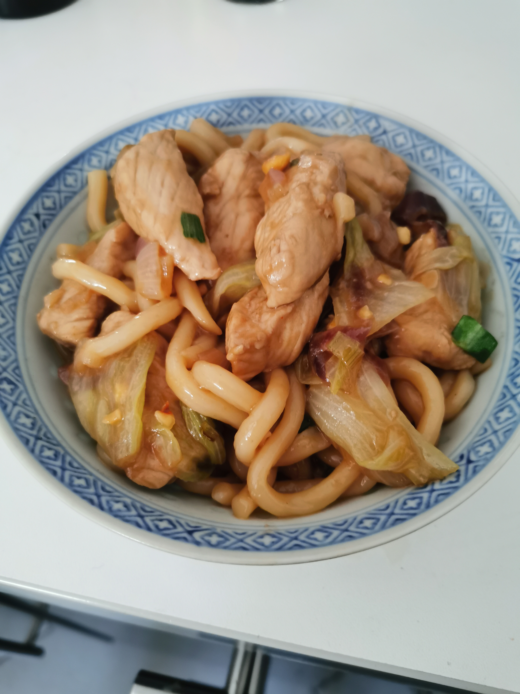

The Turkey Udon Noodles

Description
Why eat instant ramen when you can cook these delicious udon noodles, stacked with proteins thanks to the turkey breast ? Well, maybe because there aren't instant...
But they are still quick to prepare! And even quicker to eat
Ingredients
- 1 pack of Udon Noodles sous-vide
- 150g of turkey breast (or chicken breast)
- 1 garlic
- 1 onion
- 3 shallots
- 1 green onion
- 200g of lettuce
- 10g of nuts
For the sauce
- 2 tbs of soy sauce
- 2 tbs of oyster sauce
- 2 tsp of sesame oil
- 1 tsp of brown sugar
- 1 tsp of MSG
Steps
- Chop and add into a bowl the garlic, onion, shallots and the green onion (separate the white and green parts)
- Add them to a mid-high heating wok
- While it's cooking, cut the turkey breast in small pieces
- Add the turkey breast to the woke, and start as well the cooking of the Udon Noodles in hot water (not boiling)
- While everything is cooking, chop the lettuce and prepare the sauce
- Shortly before the noodles are cooked, add the lettuce to the wok, and bring down the heat to low-medium
- Drain and add the noodles to the wok, as well as the sauce
- Let cook a low heat for a few minutes until the sauce thickens, and add these nuts
- Serve in a bowl